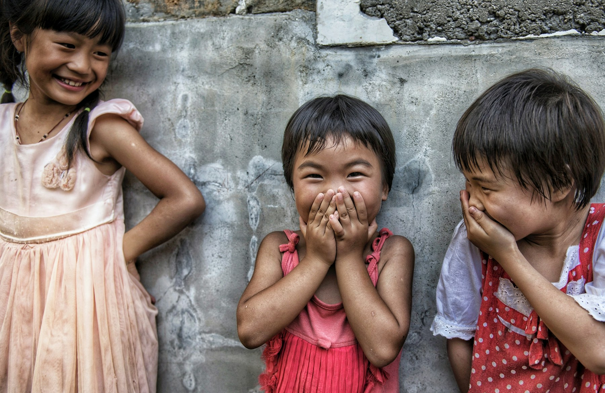
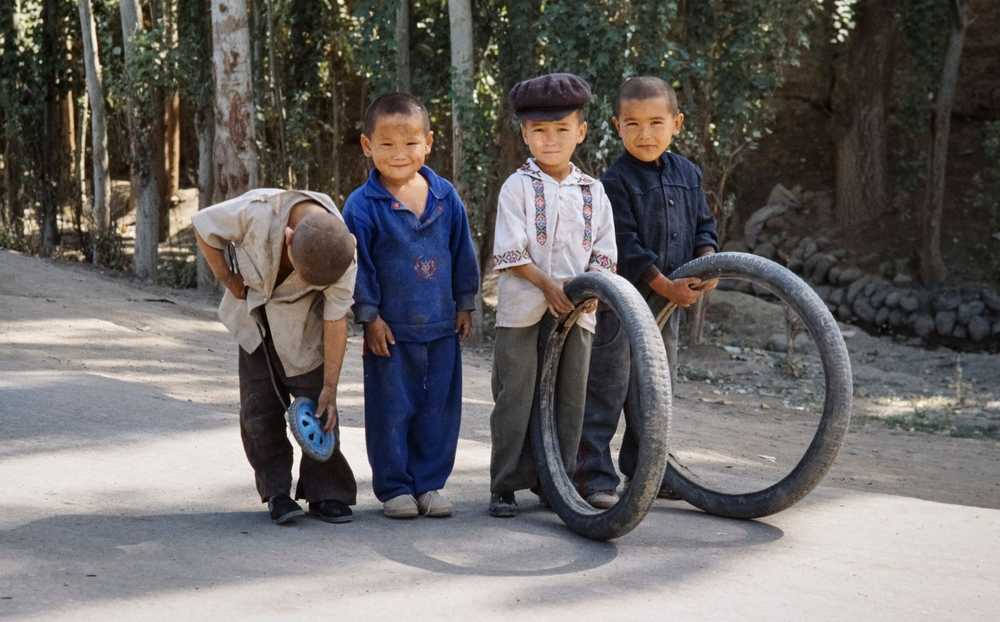
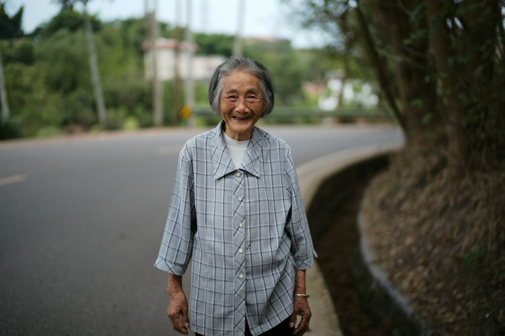

01
读到世界
云南 · 乡村阅读
进度78%
6 间闲置教室，正在被改造成孩子们每天都能抵达的阅读室。第一批 2,400 册图书已上架。
查看本期项目记录 →
A FIELD PRACTICE FOR LASTING CHANGE
我们不把公益当成一段短暂的感动。
它是一种长期在场的能力。
我们关心的不是一次帮扶，而是当我们离开后，什么还会继续生长。
微光计划与社区、学校、手艺人和基层伙伴一起工作。我们把资源投入可被当地人继续使用的系统里：一间有书的房子、一套可维护的水系统、一门能带来收入的手艺。
看见正在发生的事 ↓
点击项目，进入它此刻的现场。
云南 · 乡村阅读
6 间闲置教室，正在被改造成孩子们每天都能抵达的阅读室。第一批 2,400 册图书已上架。
查看本期项目记录 →河北 · 清洁饮水
18 个村庄的雨水收集系统完成修复。水源不再只是等待被运来的物资，而成为社区能自己维护的基础设施。
查看本期项目记录 →贵州 · 女性生计
每笔支持的去向、每个项目的阶段和每一次复盘，都留在公开账本中。因为信任不是一种姿态，而是经得起回看的过程。
仅显示已发布的账本记录

想了解一个项目，参与一次行动，或只是聊聊你也在意的事，都欢迎找到我们。